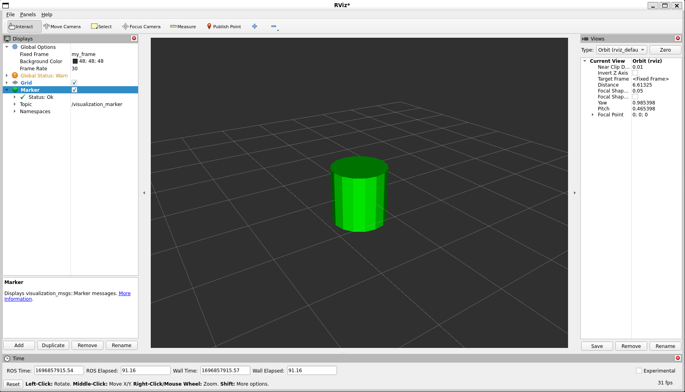

備註
您正在閱讀開發版本的文件。對於最新發行的版本，請參見 Lyrical。
Marker: Sending Basic Shapes (C++)
Goal: Show how to use visualization_msgs/msg/Marker messages to send basic shapes to RViz.
教學等級： 中級
Time: 15 Minutes
備註
This tutorial assumes you are already comfortable with writing ROS 2 C++ nodes and building packages with colcon.
Intro
Unlike many other RViz displays, the Marker display lets you visualize data without RViz needing to know the meaning of that data ahead of time.
Instead, your node sends primitive objects through visualization_msgs/msg/Marker messages, and RViz renders them as arrows, boxes, spheres, cylinders, and other marker types.
This tutorial shows how to send the four basic shapes: cube, sphere, cylinder, and arrow. We'll create a program that sends out a new marker every second, replacing the last one with a different shape.
If you want a broader reference for marker fields and object types after this walkthrough, see Marker: Display types.
Create a package
Get the package from the visualization_tutorials repository and build it in your workspace.
$ colcon build --packages-select visualization_marker_tutorials
Sending markers
The code
The code for this tutorial lives in the visualization_marker_tutorials package.
You can read it in basic_shapes.cpp.
The code explained
Ok, let's break down the code piece by piece.
We start by including the headers used by the node, including rclcpp and the visualization_msgs/msg/Marker message definition.
#include <memory>
#include "rclcpp/logging.hpp"
#include "rclcpp/rclcpp.hpp"
#include "visualization_msgs/msg/marker.hpp"
This should look familiar.
We initialize ROS 2, create a node, and create a publisher on the visualization_marker topic.
rclcpp::init(argc, argv);
auto node = rclcpp::Node::make_shared("basic_shapes");
auto marker_pub = node->create_publisher<visualization_msgs::msg::Marker>(
"visualization_marker", 1);
rclcpp::Rate loop_rate(1);
You should have seen the ROS 2 include and node setup by now.
The publisher is what matters for RViz, because the Marker display subscribes to the same topic.
Here we create an integer to keep track of what shape we're going to publish.
The four types we'll be using here all use the visualization_msgs/msg/Marker message in the same way, so we can simply switch out the shape type to demonstrate the four different shapes.
uint32_t shape = visualization_msgs::msg::Marker::CUBE;
This begins the meat of the program.
First we create a new visualization_msgs/msg/Marker and begin filling it out.
The header sets the frame ID and timestamp for the marker.
visualization_msgs::msg::Marker marker;
marker.header.frame_id = "my_frame";
marker.header.stamp = rclcpp::Clock().now();
We set frame_id to my_frame as an example.
In a running system, this should be the frame relative to which you want the marker pose to be interpreted.
Because this tutorial does not publish transforms, RViz will need to use the same fixed frame later.
The namespace and ID fields are used together to create a unique name for the marker. If another message arrives with the same namespace and ID, the new marker replaces the old one.
marker.ns = "basic_shapes";
marker.id = 0;
This type field specifies the kind of marker we're sending.
The available types are listed in the visualization_msgs/msg/Marker message.
Here we set the type to the shape variable, which changes each time through the loop.
marker.type = shape;
The action field specifies what to do with the marker.
The values used in ROS 2 are ADD, DELETE, and DELETEALL.
ADD is something of a misnomer, because it really means "create or modify".
marker.action = visualization_msgs::msg::Marker::ADD;
Here we set the pose of the marker. This is a full 6-DOF pose relative to the frame and time specified in the header. Here we place it at the origin and use the identity orientation.
marker.pose.position.x = 0;
marker.pose.position.y = 0;
marker.pose.position.z = 0;
marker.pose.orientation.x = 0.0;
marker.pose.orientation.y = 0.0;
marker.pose.orientation.z = 0.0;
marker.pose.orientation.w = 1.0;
Now we specify the scale of the marker.
For the basic shapes, a scale of 1.0 in all directions means one meter on a side.
marker.scale.x = 1.0;
marker.scale.y = 1.0;
marker.scale.z = 1.0;
The color is specified as RGBA values in the range [0, 1].
Here we use opaque green.
The alpha channel is especially important because markers are transparent by default if a is left at 0.
marker.color.r = 0.0f;
marker.color.g = 1.0f;
marker.color.b = 0.0f;
marker.color.a = 1.0;
The lifetime field controls how long the marker should stick around before being deleted automatically.
A zero duration means it should never be deleted automatically.
marker.lifetime = rclcpp::Duration::from_nanoseconds(0);
Now we publish the marker message.
marker_pub->publish(marker);
This code lets us show all four shapes while just publishing one marker message. Based on the current shape, we set what the next shape to publish will be.
switch (shape) {
case visualization_msgs::msg::Marker::CUBE:
shape = visualization_msgs::msg::Marker::SPHERE;
break;
case visualization_msgs::msg::Marker::SPHERE:
shape = visualization_msgs::msg::Marker::ARROW;
break;
case visualization_msgs::msg::Marker::ARROW:
shape = visualization_msgs::msg::Marker::CYLINDER;
break;
case visualization_msgs::msg::Marker::CYLINDER:
shape = visualization_msgs::msg::Marker::CUBE;
break;
}
Sleep for one second and loop back to the top.
loop_rate.sleep();
Building the code
Build visualization_marker_tutorials in your workspace with:
$ colcon build --packages-select visualization_marker_tutorials
Running the code
Source your workspace and run the node.
$ source install/setup.bash
$ ros2 run visualization_marker_tutorials basic_shapes
Viewing the markers
Now that the node is publishing markers, start RViz so you can view them.
$ source install/setup.bash
$ ros2 run rviz2 rviz2
If you have never used RViz before, start with the RViz User Guide.
Because we do not have any transforms set up, the first thing to do is set the Fixed Frame to the frame used in the marker message, my_frame.
Then add a Marker display.
Notice that the default topic, visualization_marker, is the same one being published by the node.
You should now see a marker at the origin that changes shape every second.

More information
For the next marker tutorial, continue with Marker: Points and Lines. For more information about marker message fields and the marker types beyond the four shown here, continue with Marker: Display types. For the full source tree, see the visualization_tutorials repository.